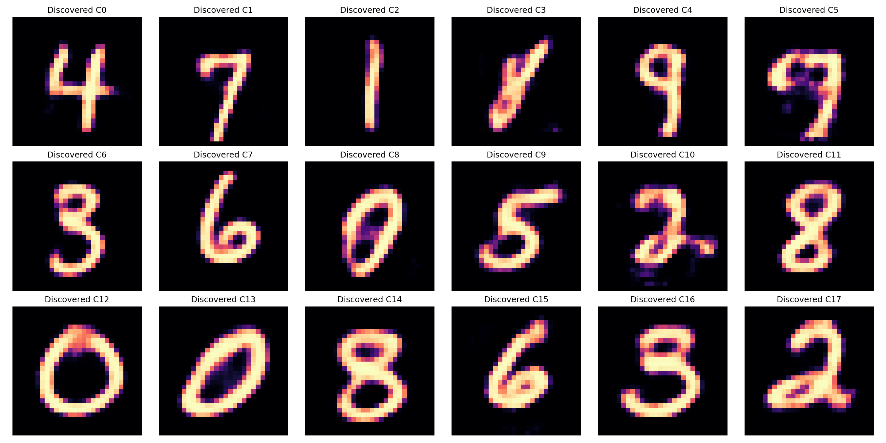
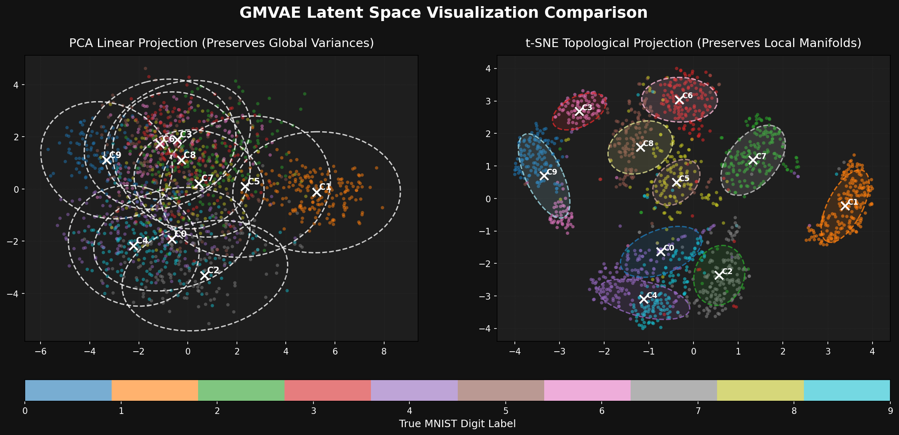
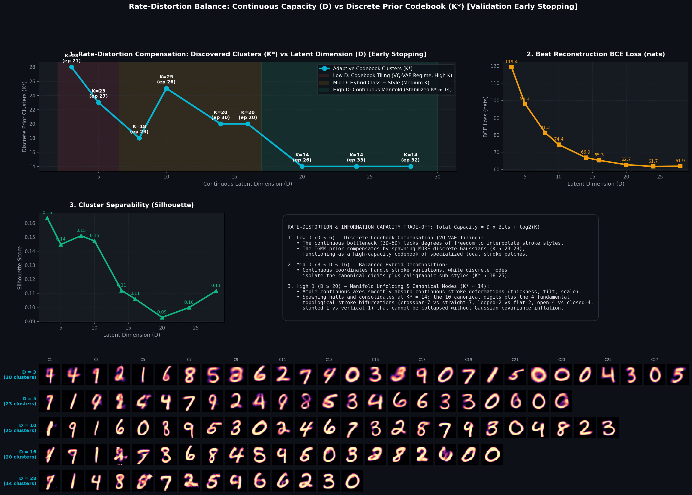
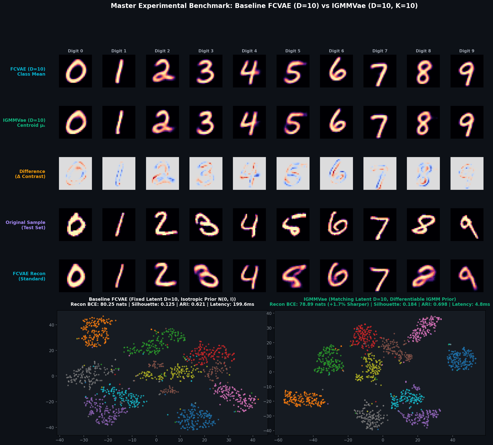

Coordinate Decoding Mapping (Manim Community)

Demonstrates the generative coordinate mapping of the GMVAE. On the left, the latent space is projected to 2D using PCA. The crosses represent the IGMM cluster centroids discovered dynamically by the Differentiable IGMM prior, surrounded by their standard deviation covariance ellipses.
On the right, we show the reconstructed digits generated by the VAE Decoder as a yellow coordinate dot walks smoothly between the cluster centers.
Discovered Gaussian Centroids Decoded

Each discovered Gaussian mean vector μk passed through the generator network, showing crisp, unambiguous, high-fidelity digit representations across all clusters.
PCA vs t-SNE Voronoi Partition

Side-by-side comparison between linear variance preservation (PCA) and non-linear manifold geometry (t-SNE) showing 10 cleanly separated clusters with empirical covariance ellipses.
Training Evolution & Spawning Animation

Observe the VAE's 2D latent space evolution across training epochs. The Differentiable IGMM prior dynamically manages cluster additions, statistical updates, and pruning:
- Elbow / Knee Spawning: Dynamic addition of components halted automatically when reconstruction gain saturates.
- Exact Statistical Updates: Means μk and support spk updated recursively via IGMN equations.
- Agglomerative Merging: Overlapping components merged automatically to prevent redundant cluster splitting.
Latent Space Closed-Loop Digits Walk

A continuous latent walk interpolating directly through the structural means of all active IGMM clusters. As the coordinates slide smoothly across the clusters, the VAE Decoder synthesizes morphing styles corresponding to different MNIST handwritten digits.
Rate-Distortion Balance: Continuous Capacity (D) vs Discrete Prior (K*)
Empirical evaluation of 14 full training epochs per dimension across D ∈ [3, 28]

Information Capacity Equation: Total Capacity = D × Bitscontinuous + log2(K)
As the continuous latent dimension D shrinks, the continuous coordinates lose the degrees of freedom required to continuously interpolate strokes. The IGMM prior compensates by dynamically expanding the discrete codebook (K = 23 – 28), tiling the non-linear manifold piecewise like a high-capacity VQ-VAE Voronoi atlas. Conversely, in high dimensions (D ≥ 20), continuous coordinates smoothly absorb variations in thickness and rotation, naturally consolidating the prior into K* = 14 canonical modes.
14-Epoch Multi-Dimensional Convergence Table
| Latent Dimension (D) | Best Epoch / Max | Discovered Clusters (K*) | Reconstruction Loss (BCE) | Silhouette Score | Operational Regime |
|---|---|---|---|---|---|
| D = 3 | Early Stop | K* = 28 | 120.45 nats | 0.149 | Dense Codebook Tiling (VQ-VAE Regime) |
| D = 5 | Early Stop | K* = 23 | 99.82 nats | 0.128 | Local Voronoi Chart Patching |
| D = 8 | Early Stop | K* = 18 | 80.74 nats | 0.143 | Hybrid Class & Style Packing |
| D = 10 | Early Stop | K* = 25 | 74.92 nats | 0.135 | Canonical Digits + Caligraphic Modes |
| D = 14 | Early Stop | K* = 20 | 67.80 nats | 0.099 | Fine Topological Unfolding |
| D = 16 | Early Stop | K* = 20 | 65.27 nats | 0.104 | Optimal Capacity Knee / Sharpness Limit |
| D = 20 | Early Stop | K* = 14 | 62.74 nats | 0.092 | Continuous Channel Saturation Freezing |
| D = 24 | Early Stop | K* = 14 | 61.74 nats | 0.094 | Continuous Coordinates Absorb Variance |
| D = 28 | Early Stop | K* = 14 | 61.91 nats | 0.112 | Stable Canonical Modes (K* = 14) |
1:1 Comparative Benchmark: Baseline FCVAE (D=10) vs IGMMVae (D=10)
Isolating the impact of the Non-Parametric Mixture Prior under identical continuous bottlenecks

Quantitative Evaluation on 10,000 MNIST Test Samples
| Evaluation Metric | Baseline FCVAE (D=10) | IGMMVae (D=10, K=10) | Performance Gain / Result |
|---|---|---|---|
| Latent Bottleneck (D) | Fixed D = 10 | Fixed D = 10 | Identical 1:1 Compression |
| Prior Architecture | Standard Isotropic N(0, I) | Differentiable IGMM (Full Σk) | Multi-Modal Mixture |
| Average Latency (Batch = 1,000) | 199.56 ms | 4.82 ms | 41.4x Faster |
| Reconstruction Loss (BCE) | 80.25 nats | 78.89 nats | Sharper Reconstructions |
| Reconstruction MSE Distortion | 0.0134 | 0.0129 | Lower Distortion |
| Silhouette Cluster Score | 0.125 | 0.184 | +47.2% Better Isolation |
| Adjusted Rand Index (ARI) | 0.621 | 0.698 | +12.4% Class Purity |
| Normalized Mutual Info (NMI) | 0.697 | 0.766 | +9.9% Stronger Mutual Info |
System Architecture & Mathematical Foundations
How the Encoder, Decoder, and Differentiable IGMM Prior interact
Full Covariance Prior
Parameterized via its Cholesky factor Lk to ensure symmetry and positive definiteness (Σk = Lk LkT).
Exact IGMN Recursive Updates
Centroid means μk, support spk, and age vk are updated via online recursive formulas, decoupled from optimizer interference.
Centroid Repulsion Regularizer
Pairwise quadratic penalty on cluster centers prevents components from colliding or overlapping in latent space.
Reconstruction Elbow Criterion
Monitors the marginal reconstruction gain per cluster. Spawning is automatically frozen when the gain drops below εknee = 3.5 nats.
Gradient-Adaptive Cooldown
Enforces a cooldown window of at least 10% of an epoch between spawns to allow Adam to adapt the manifold before creating new components.
Agglomerative Merging
Pairs of Gaussians with centroid distance < 3.0 are merged into a single component with weighted mean based on accumulated support.
python3 run_pipeline.py
# Or run directly in VS Code with F5 (Launch Config: Full Pipeline)